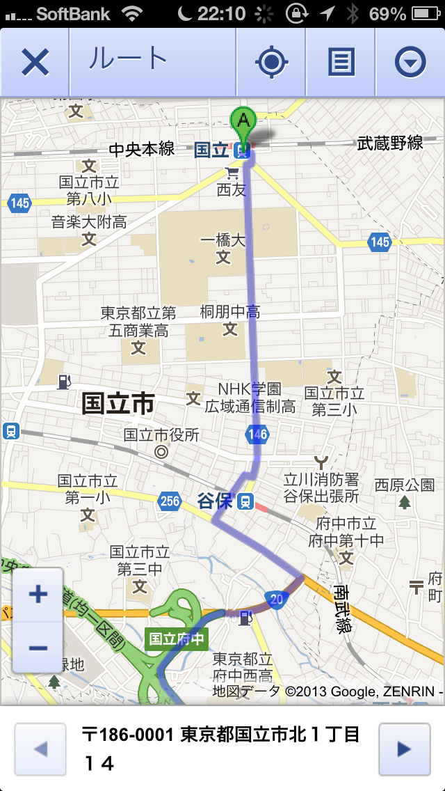

TOP
weblog
TIPS
Works
リンク
2013-04-30 国立から我が家までのルート
JR国立駅から我が家の八千代市大和田新田までのルートです。
首都高は複雑すぎて訳が分かりませんが絵的に下図のルートが近そうです。
まず、Googleマップで「国立駅 JR」から「京葉道路 武石IC」まで案内してもらってください。
iPhone5だとこんな感じで。

次は「京葉道路 武石IC」から「（僕の住所）＋モンテローザ緑ヶ丘」で案内してもらってください。